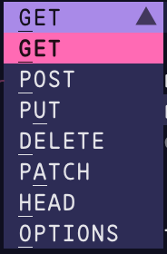
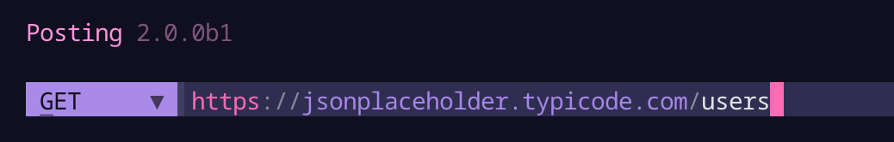
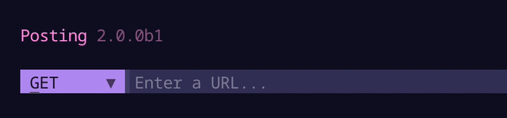

Getting Started
Posting can be installed in a matter of seconds on MacOS, Linux, and Windows.
Installation¶
The recommended method is to use uv, which is a single Rust binary that you can use to install Python apps. It's significantly faster than alternative tools, and will get you up and running with Posting in seconds.
You don't even need to worry about installing Python yourself - uv will manage everything for you.
uv¶
Here's how to install Posting using uv:
# quick install on MacOS/Linux
curl -LsSf https://astral.sh/uv/install.sh | sh
# install Posting (will also quickly install Python 3.12 if needed)
uv tool install --python 3.12 posting
# Run posting
posting
uv can also be installed via Homebrew, Cargo, Winget, pipx, and more. See the installation guide for more information.
uv also makes it easy to install additional Python packages into your Posting environment, which you can then use in your pre-request/post-response scripts.
pipx¶
If you prefer, you can install Posting via pipx.
pipx install posting
The methods above will both install Posting globally, in an isolated environment. Do not attempt to install Posting with pip.
Homebrew is not supported
Installing via Homebrew is not supported, as some of Posting's Rust and C dependencies can take over 10 minutes to compile. When using uv, installation time is measured in milliseconds, and with pipx it's just a few seconds.
A quick introduction¶
This introduction will show you how to create a simple POST request to the JSONPlaceholder mock API to create a new user. It focuses on an efficient keyboard-driven workflow, but you can also use the mouse if you prefer.
Collections and requests¶
A collection is simply a directory which may contain requests saved by Posting.
If you launch Posting without specifying a collection, any requests you create will be saved to the "default" collection.
The default collection is a directory reserved by Posting on your filesystem. It's a "global" collection and is not related to the directory you launched Posting from.
This is fine for quick throwaway requests, but you'll probably want to create a new collection for each project you work on so that you can check it into version control.
To create a new collection, simply create a new directory and pass it into Posting.
mkdir my-collection
posting --collection my-collection
Now, any requests you create will be saved in the my-collection directory as simple YAML files with the .posting.yaml extension.
When Posting opens, you'll see the collection browser on the left side of the screen with my-collection displayed at the bottom right corner.
Setting the request method to POST¶
When you launch Posting, no request is open, so the UI will look rather empty.
Let's create a simple POST request to the JSONPlaceholder mock API to create a new user.
Press Ctrl+T to open the request method dropdown:

The underlined character in each method indicates the key you can press to quickly select that method. We want to send a POST request, so press P to quickly select the POST method.
Setting the request URL¶
You can move focus forward and backward through widgets using Tab and Shift+Tab respectively. So, you can move focus from the method selector to the URL bar by pressing Tab once.
Alternatively, you can immediately move the focus to the URL bar from anywhere in Posting using Ctrl+L.
Type https://jsonplaceholder.typicode.com/users into the URL bar.

Posting's URL bar highlights parts of the URL as you type, which can be helpful for spotting typos.
It can also autocomplete domains you've previously used, to save you from having to retype them.
For example, if you later want to make a request to https://jsonplaceholder.typicode.com/posts, you can simply type "json" into the URL bar and select the URL from the autocomplete menu that appears.

Adding a JSON body¶
Press Ctrl+O to enter "jump mode", then press W to quickly jump to the "Body" tab. Jump mode is great for quickly moving through the UI without having to press Tab multiple times.
At this point focus is currently on the tab bar itself.
Press J (or Down) to move the cursor down to the dropdown.
Press Enter to open it, then select the option Raw (json, text, etc.).
Move down to the text area below using J (or Down), and type (or paste) the JSON below.
{
"name": "John Doe",
"username": "johndoe",
"email": "john.doe@example.com"
}
Note at the bottom right of the text area, JSON is pre-selected as the content type.
This means Posting will automatically use JSON syntax highlighting and it will insert the Content-Type: application/json header for you when the request is sent.
Viewing keyboard shortcuts¶
Now is probably a good time to note that you can see the full list of keyboard shortcuts for the focused widget by pressing F1. The text area widget in particular has a lot of useful shortcuts and supports things like undo/redo.
Changing keyboard shortcuts
You can remap keybindings in Posting using Keymaps.
Sending the request¶
Press Ctrl+J to send the request. This shortcut works globally.
Keyboard shortcuts
You may also be able to send the request using Alt+Enter. This only works on terminals that support the Kitty keyboard protocol.
Working with the response¶
The response will be displayed in the main body of the UI.
Press Ctrl+O to enter "jump mode", and the A to move to the response Body tab.
Press J or Down to move the cursor down into the response body.
This text area supports a bunch of different keyboard shortcuts for quickly navigating the response body.
Text can be selected by holding Shift and moving the cursor using the arrow keys (or hjkl keys for Vim fans).
You can also select text by clicking and dragging with the mouse.
Press Y or C to copy the selected text to your clipboard. If no text is selected, the entire response body will be copied.
Vim keys
The response text area supports some Vim-inspired keyboard shortcuts.
- To select text without holding Shift, you can press V to enter visual mode, and use
hjklto navigate. - If your cursor is at a bracket, you can press ++%++ to jump to the matching bracket.
- Press W to move the cursor to the next word, and B to move the cursor to the previous word.
Try experimenting to find out what's supported, and if you're desperately missing something, please start a discussion on GitHub Discussions.
You can open the response using the command defined in your $EDITOR, $POSTING_EDITOR, $POSTING_PAGER, or $POSTING_PAGER_JSON environment variables.
For example, if you set $POSTING_PAGER_JSON to fx, then press the corresponding keybind to open the pager when the response text area has focus, the response will be opened in the fx JSON viewer.
Saving the request¶
Finally, press Ctrl+S to save the request to disk. Fill out the form on the modal that appears, and press Enter or Ctrl+N to write the request to disk.
Folders
Requests can be saved to folders - simply include a / in the Path in collection field when you save the request,
and Posting will create the required directory structure for you.